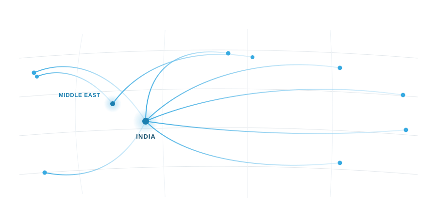

RegisteredRegistered NVOCC · Multimodal Transport Operator
Yentrans Maritime Logistics has arranged ocean freight from India
since 2009. A registered NVOCC and Multimodal Transport Operator, YML loads FCL and LCL at any
Indian port, handles Middle East origins through its Dubai and Oman branches, and moves cargo to
any major port worldwide. Behind each booking sit working relationships with the shipping lines
and with other NVOCCs, which is what produces a second option when the first one closes.
Global network
Most lanes have more than one answer.
A tight lane exposes the difference between a booking and a relationship. When
space closes on the direct service, the useful question is which of four routings is worth its
transit time and its transhipment risk.
Yentrans works with the major shipping lines and trades
space with other NVOCCs, so a rolled sailing becomes a conversation with someone who picks up,
not a form submitted into silence. Origins are Indian ports, Cochin chief among them, with
Middle East loadings handled through the Dubai and Oman branches. Destinations are any major
port worldwide. Membership of the Millennium Logistics Network puts a known agent at the far
end of most lanes, which matters on the leg after discharge.
Loading from any Indian port, with Cochin the home port.
Branch offices in Dubai and Oman for Middle East origins.
Customs clearance and documentation handled in house at Indian ports.
FCL, LCL and reefer bookings on worldwide destinations.

Services
What the desks actually do
FCL Ocean Freight
Full container loads from Cochin, Chennai, Tuticorin, Mangalore, Kolkata, Vizag, Mundra, Mumbai and Nhava Sheva. We quote against the routings that actually have space, and tell you which sailing is realistic rather than which looks best on paper.
LCL Consolidation
Part loads consolidated out of Indian and Middle East origins for onward carriage to major ports worldwide. Cargo is booked, stuffed and documented in our name or the line's, depending on how the shipment is structured.
Customs and Documentation
Export and import customs clearance in India, with the entry filed and the paperwork assembled before the vessel is alongside. Certificates, invoices and declarations are checked against each other, because one mismatched line delays a container as surely as a strike.
Temperature-Controlled Containers
Reefer container shipping from Indian and Gulf ports, with equipment nominated on suitability, not on whatever sits nearest the gate, and genset arranged where the inland leg has no power.
Inland and Door Delivery
Haulage to the port from inland factories, and delivery at the far end where the consignee wants the container rather than where the terminal would prefer to leave it. Arranged through agents we have used before.
Warehousing and Insurance
Storage before loading or after arrival, and coordination of cargo insurance so the cover matches the Incoterm and not the assumption. We will tell you plainly what a policy does not include.
Bills of lading
Whose name is on the bill
Bank rejections happen at destination, long after the vessel sailed. Yentrans
issues both House Bills of Lading and Master Bills of Lading, and which one a shipment moves
on depends on what the cargo and the customer require. An HBL suits consolidated and
multimodal movements where one party should be answerable for the through carriage. An MBL
suits letters of credit and consignees whose instructions name the ocean carrier. The choice
is made before booking.
Temperature control
A reefer is a machine before it is a container.
Reefer container shipping is where habits show. Yentrans agrees the set point, ventilation,
humidity and pre-cooling instruction in writing with the shipper before the unit is released
for loading, and reads the pre-trip inspection report instead of assuming one exists.
Plug-in availability at the transhipment port is checked against the routing before a booking
is confirmed, and the escalation contact is named at the same time. Where a unit does fail or
cargo is damaged, Yentrans has long experience of taking up and resolving claims with carriers
and insurers.
Industries
Cargo behaves differently by industry
Cargo behaves differently by industry, and so do the people shipping it. These
are the nine sectors the Kochi and Gulf desks work with most often.
Food and Beverage
Shelf life sets the schedule, so bookings are planned backwards from the receiving window at destination.
Pharmaceuticals and Healthcare
Documentation and temperature discipline carry equal weight, and both are agreed with the shipper before the container is released.
Automotive and Components
Production lines dislike surprises, so we plan sailing options and inland timing around the assembly calendar.
Chemicals and Polymers
Classification, packing declarations and line approvals are handled first, because a booking without them is not a booking.
Textiles and Apparel
Season deadlines and consolidated part loads, with LCL bookings built around buyer delivery windows and cut-off dates.
Building Materials
Heavy, low-value-per-tonne cargo where freight cost decides the deal, so routing is chosen on economics.
Agriculture and Commodities
Volumes arrive in bursts against a short season, so space is negotiated in blocks before the peak.
Industrial Equipment and Machinery
Out-of-gauge and heavy-lift pieces need survey, lashing plans and carrier approval before a rate means anything.
Retail and Consumer Goods
Many suppliers, one consignee, and paperwork that has to agree with the purchase order line by line.
Why Yentrans
Four things that decide a lane
01
Options when lanes tighten
Carrier accounts and NVOCC relationships mean more than one way out of a tight week. When a
sailing rolls, the alternatives already exist and the conversation is about choosing one.
02
Reefer habits on every box
The checking discipline that temperature-controlled cargo demands is applied to dry
containers too. Most cargo does not need a set point, and all cargo benefits from someone
reading the paperwork twice.
03
India and the Gulf
Kochi handles Indian ports; Dubai and Oman handle Gulf loadings. A buyer sourcing from both
regions deals with one company and one set of documentation conventions.
04
Since 2009, one port
Yentrans has worked out of Kochi since 2009, which is long enough to know which inland
routes fail in monsoon and how customs examination queues actually move. Institutional memory
is cheaper than learning twice.
How we work
From enquiry to destination
Enquiry
You tell us origin, destination, cargo and any
temperature or handling requirement. We come back with routings and rates, including the
routing we would advise against and why.
Booking
Space is confirmed with the line or through an NVOCC
counterpart, equipment is nominated, and the bill of lading type is settled in writing at this
stage.
Documents and clearance
Export documentation is prepared, the
customs entry is filed, and every certificate is read against the invoice before anything is
presented to the bank.
Sailing and destination
We follow the vessel, tell you when a
schedule changes, and hand over to the destination agent for clearance, inland haulage or door
delivery as instructed.
Tell us the lane
Send the origin, the destination, the cargo and the month you want it to move.
We will reply with routings, rates and whatever we think you should know before booking.